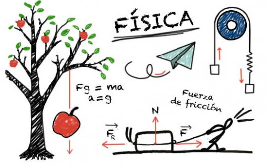

La física, teorías centrales
La partícula hermana del bosón de Higgs que explicaría la expansión del universo en sus inicios y que sería responsable de su actual uniformidad parece no existir.

Es conocido que la mayoría de las civilizaciones de la antigüedad trataron desde un principio de explicar el funcionamiento de su entorno; miraban las estrellas y pensaban cómo ellas podían regir su mundo. Esto llevó a muchas interpretaciones de carácter más filosófico que físico; no en vano en esos momentos a la física se le llamaba filosofía natural. Muchos filósofos se encuentran en el desarrollo primigenio de la física, como Aristóteles, Tales de Mileto o Demócrito, por ser los primeros en tratar de buscar algún tipo de explicación a los fenómenos que les rodeaban.